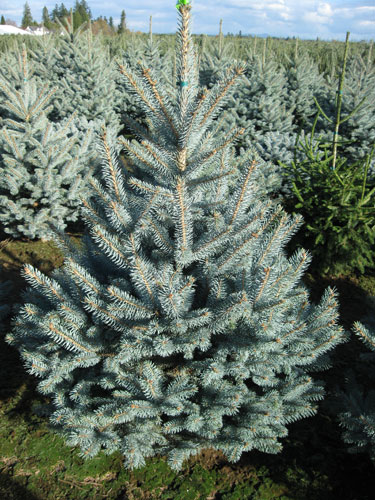

- Faiskolánkban rendszeresen ellenőrizzük a fákat, így kizárjuk a beteg vagy károsodott növények eladását.
- A fákat megfelelő körülmények között, megfelelő szakmai háttérrel neveljük.
- Minden vásárlónak részletes tanácsadást adunk a fa neveléséről, miután megvásárolta azt.
- Sokféle gyümölcsfát, díszfát és egyéb növényt vásárolhattok nálunk.
- Végül, de nem utolsó sorban egy jó minőségű fa megfelelő gondozás mellett sok éven keresztül díszítheti a kertünket vagy teremhet gyümölcsöt.
Miért fontos, hogy tőlünk vásárolj fákat?

Fenyő fa
A fenyőfa örökzöld tűlevelű fa, amely egész évben megőrzi zöld színét. Illatos gyantájával és szép formájával a természet egyik különleges fája, amely az erdőkben és a kertekben is megtalálható. Karácsonykor szezonálisan több féle is megtalálható nálunk.

Díszfa
Ez a díszfa különleges, gömbölyű lombkoronájával és élénkzöld leveleivel díszíti a kertet. Szép árnyékot ad, és elegáns megjelenésével még hangulatosabbá teszi a környezetét.

Japán juhar
A japán juhar különleges díszfa, amelynek levelei tavasszal és nyáron zöldek, ősszel pedig gyönyörű piros, narancssárga színűvé változnak. Különleges formájú lombkoronájával és színes leveleivel nagyon szépen díszíti a kerteket.